02-120 Programming for Scientists, Fall 2026 · Phillip Compeau
Every automaton on this page runs on the engine that we built in class. From one to the next, the code does not change at all; only the rule file, the starting board, and the color map do. Each preview below is a short loop; click it to play the full video.
python/src/cellular_automata folder.python instead of python3 on Windows).output/.The arguments are, in order: neighborhood type, rule file, starting board, output file (without .mp4), cell width in pixels, number of generations, and an optional color map. If a run is slow, lower the cell width or the number of generations. Then try making your own: write a new board, or change a few lines of a rule file, and see what happens.
The Game of Life is just one rule file (rules/gol_rules.txt) for our general engine.
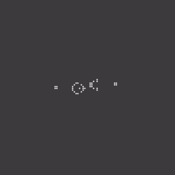
A gun that fires a new glider every 30 generations, forever.
python3 main.py Moore rules/gol_rules.txt boards/gosper_gun.csv output/gosper_gun 20 400
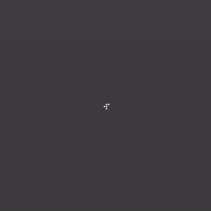
Five live cells that take more than 1,000 generations to settle down.
python3 main.py Moore rules/gol_rules.txt boards/r_pentomino.csv output/r_pentomino 8 1200
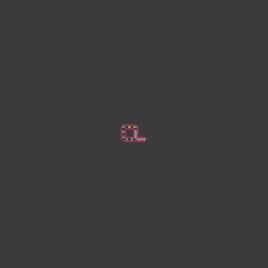
The self-replicating automaton from class: loops are born, live, reproduce, and die. This one takes about ten minutes to render.
python3 main.py vonNeumann rules/langton_loop.txt boards/langton_loop.csv output/langton_loop 20 900
Three states, and each one beats one of the others: rock beats scissors, scissors beats paper, paper beats rock.
The three states start in separate corners and spread until they collide.
python3 main.py vonNeumann rules/rps.txt boards/rps_corners.csv output/rps_corners 5 500 color_maps/rps.txt
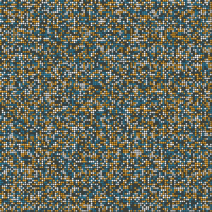
The same rules starting from a random board.
python3 main.py vonNeumann rules/rps.txt boards/rps_random.csv output/rps_random 5 300 color_maps/rps.txt
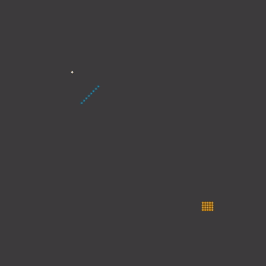
The same rules starting from a few small clusters; watch which one takes over.
python3 main.py vonNeumann rules/rps.txt boards/rps_clusters.csv output/rps_clusters 5 180 color_maps/rps.txt
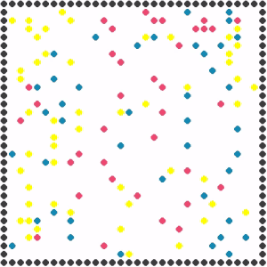
A variant with its own rules: rock, paper, and scissors particles bounce around a walled box, and the winners of each collision survive.
python3 main.py vonNeumann rules/rps_bounce.txt boards/rps_bounce.csv output/rps_bounce 15 200 color_maps/rps_bounce.txt
Based on a research paper, this automaton grows a crystal outward from a small seed.
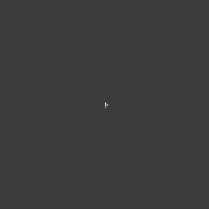
python3 main.py Moore rules/crystal_growth.txt boards/crystal_growth_1.csv output/crystal_growth_1 5 80 color_maps/crystal_growth.txt
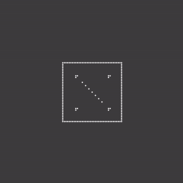
The same rules from a different seed.
python3 main.py Moore rules/crystal_growth.txt boards/crystal_growth_2.csv output/crystal_growth_2 5 60 color_maps/crystal_growth.txt
A classic traffic model: blue cars try to move up and orange cars try to move right, and a car waits whenever the cell ahead of it is occupied. Depending on how crowded the city is, traffic either flows freely or jams for good.
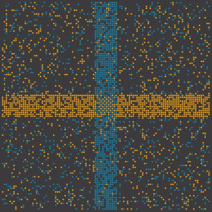
python3 main.py vonNeumann rules/bml_traffic.txt boards/bml_traffic_random.csv output/bml_traffic_random 5 400 color_maps/bml_traffic.txt
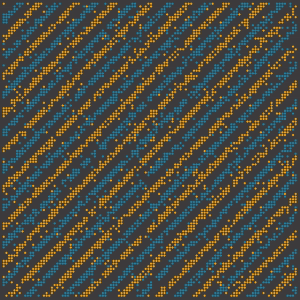
python3 main.py vonNeumann rules/bml_traffic.txt boards/bml_traffic_diagonal.csv output/bml_traffic_diagonal 5 400 color_maps/bml_traffic.txt
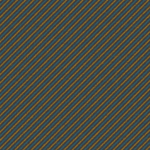
A 512 by 512 board. Keep the cell width at 3 or more here: below that, the cars are drawn too small to see.
python3 main.py vonNeumann rules/bml_traffic.txt boards/bml_traffic_large.csv output/bml_traffic_large 3 300 color_maps/bml_traffic.txt
Predators eat prey, and prey reproduce and swim away, producing waves of activity until the system burns out. This model is related to the chapter's practice exercises.
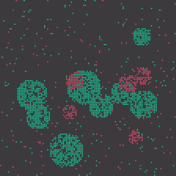
Clusters of prey, some with predators already inside.
python3 main.py Moore rules/predator_prey.txt boards/predator_prey.csv output/predator_prey 5 270 color_maps/predator_prey.txt
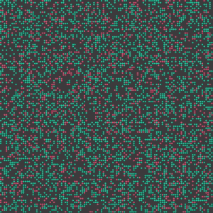
python3 main.py Moore rules/predator_prey.txt boards/predator_prey_random.csv output/predator_prey_random 5 290 color_maps/predator_prey.txt
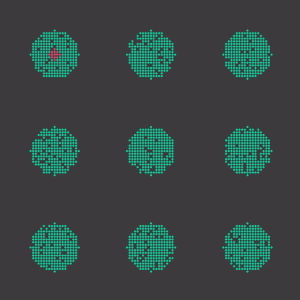
Nine separate clusters of prey, with a single small group of predators in the top-left one. The prey grow until they merge and fill the board, while the predators sweep across behind them like a wildfire.
python3 main.py Moore rules/predator_prey.txt boards/predator_prey_clusters.csv output/predator_prey_clusters 5 540 color_maps/predator_prey.txt
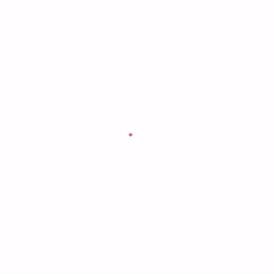
An ant turns right on a white cell and left on a black one, flips the color of the cell, and steps forward. The color map is required because the ant uses more states than the default color map covers.
python3 main.py vonNeumann rules/langtons_ant.txt boards/langtons_ant.csv output/langtons_ant 10 400 color_maps/langtons_ant.txt
Wireworld models electronic circuits: electrons (a head followed by a tail) travel along wires.
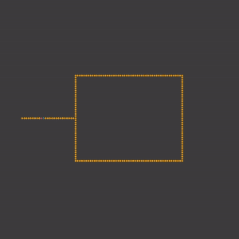
An electron travels down a wire into a loop, splits in two, and the two halves cancel out when they meet on the far side.
python3 main.py Moore rules/wireworld.txt boards/wireworld.csv output/wireworld 5 110 color_maps/wireworld.txt
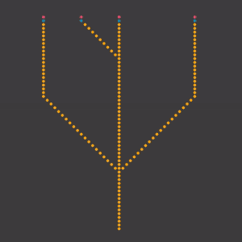
Signals travel along a set of branching wires.
python3 main.py Moore rules/wireworld.txt boards/wireworld_nae.csv output/wireworld_nae 10 50 color_maps/wireworld.txt
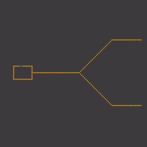
A Wireworld clock: one electron circles a small loop forever, and every time it passes the output wire it sends a pulse down the wire, which splits into two branches.
python3 main.py Moore rules/wireworld.txt boards/wireworld_pulse.csv output/wireworld_pulse 5 200 color_maps/wireworld.txt
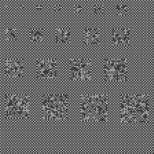
A checkerboard with noisy patches settles down within a few generations, leaving only the outlines of the patches.
python3 main.py Moore rules/checkerboard.txt boards/checkerboard.csv output/checkerboard 5 20 color_maps/checkerboard.txt